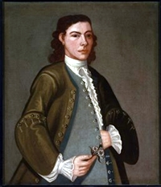

Gerrit Staats
Gerrit Staats was born in June 1722. He was the younger of two sons in the large family of Barent and Neeltje Vandenbergh Staats. His parents had lived in Albany but relocated to family property across the Hudson in Rensselaerswyck sometime prior to Gerrit's birth.
In June 1747, he married Albany native Debora Beekman. By 1764, the union had produced eight children - all of whom were christened at the Albany Dutch church.
In 1748, he was appointed firemaster for the second ward. The next year, he sold an Albany lot to Cornelis Ten Broeck. In 1749, he was named co-executor of his father's will.
During the mid-1760s, he was living on family property on Staats Island - (by the terms of their father's will) sharing the homestead with his brother, Jochem. Each brother was assessed substantially on the property. In 1767, he was identified as a lieutenant in Joachim's militia company from the "east side" of the manor of Rensselaerswyck. Their complex on Staats Island was marked as "B" on the Bleecker Map of Rensselaerswyck - on the east side of the river.
2.jpg){kind=link}
Gerrit Staats buried his wife in August 1764 following the birth of her last child. He died sometime afterwards. However, a Gerrit Staats was prominent in the community based record for several decades.
Portrait detail copied from an online description of an item in the collection of the Figge Art Museum in Davenport, Iowa. Online offering includes biographical information on Staats and material on artist John Heaton.